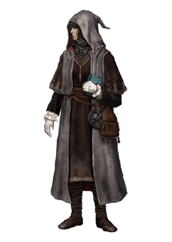
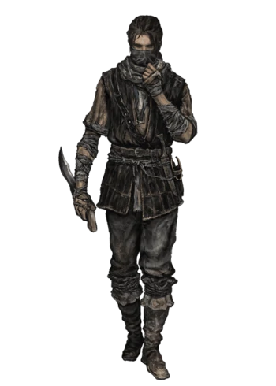
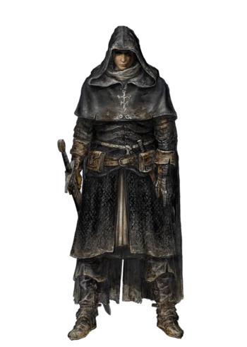
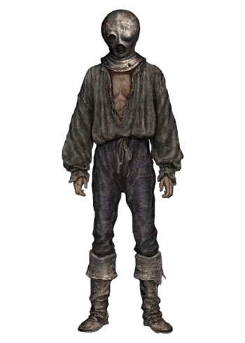
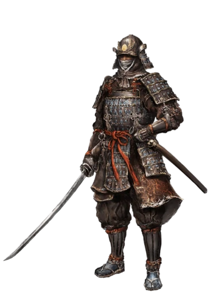
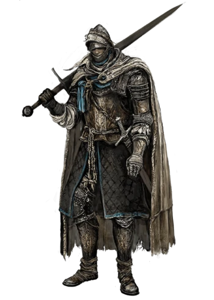
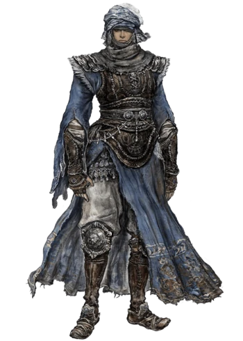

Clases
Elden Ring es un juego en el que tendrás que escoger una clase nada más empezar, así como un regalo inicial
para facilitar las cosas al principio. Evidentemente, una de tus primeras preguntas será cuál es la mejor
clase y regalo con el que comenzar a jugar. Pues tenemos una buena noticia y es que sí que hay dos clases
muy superiores al resto.
Astrólogo

|
Un erudito que lee el destino en las estrellas. Seguidor de la escuela de hechicería de piedras refulgentes.
Si lo tuyo es la magia, escoge a un personaje de la clase Astrólogo. Aunque lleva una Espada para defenderse, gran parte de tu capacidad ofensiva se basará en los hechizos asociados a Inteligencia.
Estadísticas iniciales del Astrólogo en Elden Ring:
| Clase | Nivel | VIG | MND | END | STR | DEX | INT | FTH | ARC |
| Astrólogo | 6 | 9 | 15 | 9 | 8 | 12 | 16 | 7 | 9 |
|
Bandido

|
Un peligroso bandido que ataca los puntos débiles. Destaca en el combate a distancia con arcos.
Una de las pocas clases dedicadas de inicio a los ataques a distancia es Bandido, que contará con arcos para atacar a los enemigos.
Estadísticas iniciales del Bandido en Elden Ring:
| Clase | Nivel | VIG | MND | END | STR | DEX | INT | FTH | ARC |
| Bandido | 5 | 10 | 11 | 10 | 9 | 13 | 9 | 8 | 14 |
|
Confesor

|
Un espía eclesiástico habilidoso en las operaciones clandestinas. Diestro con la espada y los encantamientos.
Al contrario que Prisionero, la clase Confesor sí está recomendada para principiantes en los Souls.
Está orientado más hacia su propia protección y supervivencia que hacia el ataque. No domina ningún aspecto en concreto, pero podrás orientarlo hacia donde te interese.
| Clase | Nivel | VIG | MND | END | STR | DEX | INT | FTH | ARC |
| Confesor | 10 | 10 | 13 | 10 | 12 | 12 | 9 | 14 | 9 |
|
Prisionero

|
Prisionero encasquetado en una máscara de hierro. Al haber pertenecido a la élite cuando era libre, conoce la hechicería de piedras refulgentes.
La clase de Prisionero es una de las más complejas, pero quizá sea de las apuestas más interesantes a largo plazo.
Sirve tanto para los ataques con espadas como para la magia, y aunque no domina tanto ninguno de los dos aspectos, puede llegar a dominarlos.
Estadísticas iniciales del Prisionero en Elden Ring:
| Clase | Nivel | VIG | MND | END | STR | DEX | INT | FTH | ARC |
| Prisionero | 6 | 11 | 12 | 11 | 8 | 14 | 14 | 6 | 9 |
|
Samurai

|
Un hábil luchador de los lejanos territorios del Cañaveral. Diestro con catanas y arcos largos.
La clase Samurái es relativamente parecida al Vagante, pero incide más en la Destreza que en la Fuerza.
Además de atacar cuerpo a cuerpo con su katana a dos manos, cuenta con un Arco que le permite atacar a distancia.
Estadísticas iniciales del Samurái en Elden Ring:
| Clase | Nivel | VIG | MND | END | STR | DEX | INT | FTH | ARC |
| Samurái | 9 | 12 | 11 | 13 | 12 | 15 | 9 | 8 | 8 |
|
Vagabundo

|
Un caballero exiliado de su tierra natal y obligado a deambular. Robusto y armado.
Vagante es la típica clase equilibrada orientada al combate cuerpo a cuerpo, aunque si inviertes unos pocos niveles en Fe o Inteligencia podrás usar también hechizos en poco tiempo.
Estadísticas iniciales del Vagante en Elden Ring:
| Clase | Nivel | VIG | MND | END | STR | DEX | INT | FTH | ARC |
| Vagante | 9 | 15 | 10 | 11 | 14 | 13 | 9 | 9 | 7 |
|
Guerrero

|
Un guerrero de una tribu nómada que empuña armas en ambas manos. Técnica excepcional.
La clase Guerrero también se orienta al cuerpo a cuerpo, pero apuesta por la Destreza frente a la Fuerza, como demuestra la Cimitarra que llevarás inicialmente.
Al igual que con Vagante, podrás conseguir acceso a hechizos si dedicas unos niveles a ello.
Estadísticas iniciales del Guerrero en Elden Ring:
| Clase | Nivel | VIG | MND | END | STR | DEX | INT | FTH | ARC |
| Guerrero | 8 | 11 | 12 | 11 | 10 | 16 | 10 | 8 | 9 |
|
Miserable
|
Un pobre tonto sin propósito en la vida, desnudo como el día en el que nació. Solo posee un garrote.
Como suele ser habitual en los Souls, hay una clase muy distinta al resto pensada para expertos: aquí se llama Miserable.
Empezarás sin ropa y armado con un garrote, a nivel 1 (muy por debajo del resto) y con las mismas estadísticas en todos los apartados.
Estadísticas iniciales del Miserable en Elden Ring:
| Clase | Nivel | VIG | MND | END | STR | DEX | INT | FTH | ARC |
| Miserable | 1 | 10 | 10 | 10 | 10 | 10 | 10 | 10 | 10 |
|
|